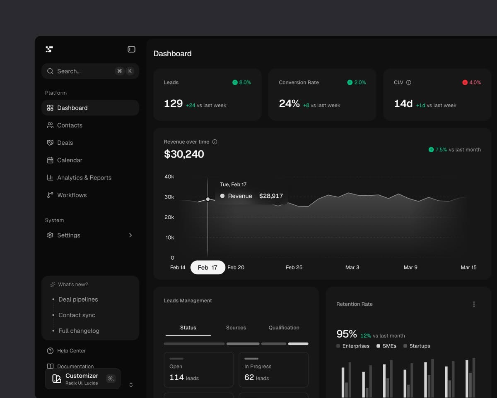
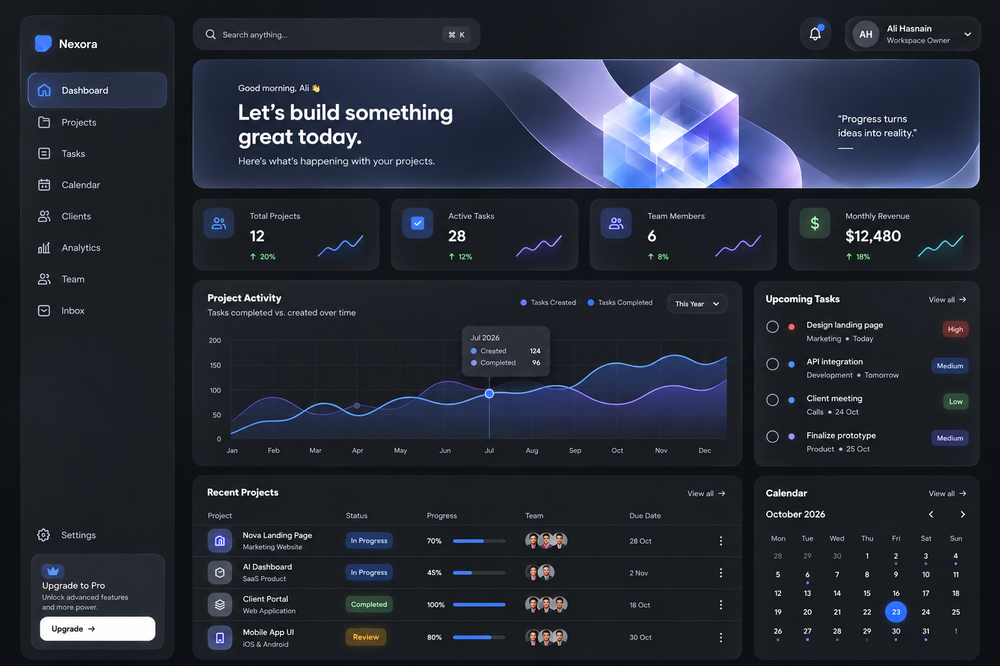
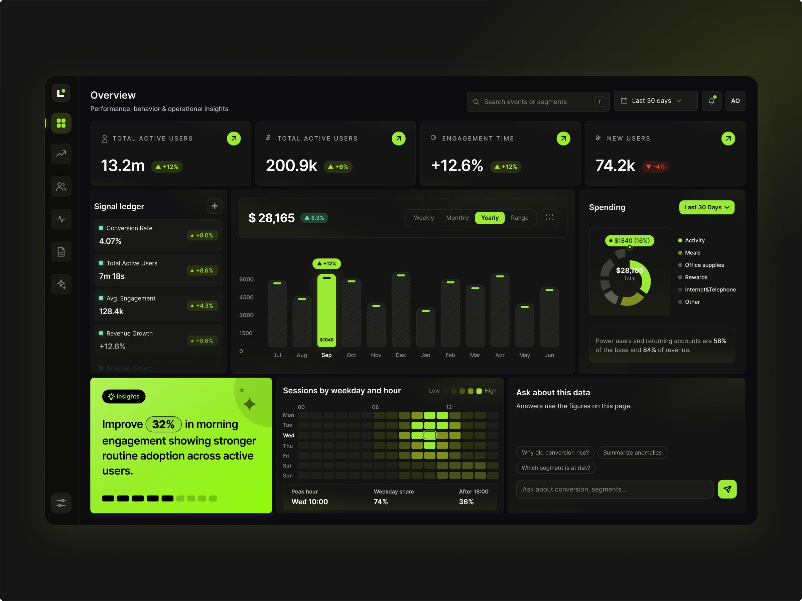

GPU INFERENCE LOAD
+4.2%
88.4%
/ 128 H100s
Cluster: ap-southeast-1a (Global Mesh)
Measuring token throughput vs. generation latency across 14 edge regions
us-east-virginia
32 nodes • vLLM engine
eu-central-frankfurt
24 nodes • TensorRT-LLM
ap-southeast-singapore
40 nodes • FlashAttention-3
ap-northeast-tokyo
32 nodes • Speculative Dec
Scraped & Deconstructed via FastMCP • Dominant Palette #0C0D10 & #112D27

Dark graphite card surfaces and high-contrast tabular typography.

Multi-curve wave plots and crisp border separators.

Linear-style asymmetric cards with zero generic purple gradients.
Operational signal beacon and high-contrast status pills.